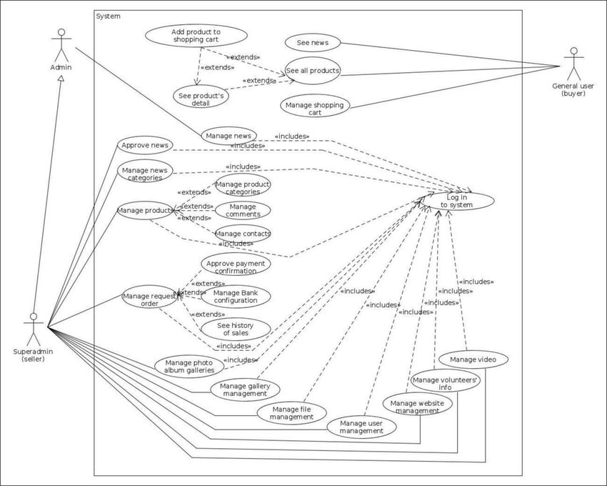

Áttekintés
A rendszer a könnyed adatrögzítést / keresést / megosztást teszi lehetővé, míg a személyes accountok bevezetésével egyszerűen elérhetőek / visszakereshetőek az adott személy érdeklődési körébe eső információk. Az account törlésekor, az adott személy által rögzített adatok is eltűnnek ezzel gondoskodva arról, hogy a platform minden esetben valós információt biztosítson és spam mentes legyen. Az alkalmazás webes felületen lesz elérhető ezzel biztosítva, hogy minnél több felhasználó számnára elérhető legyen.
Terjedelem
A hírportálok feladata, hogy információt szolgáltasson az olvasónak. Új ismeretekhez, információkhoz könnyen juthatunk egy új és friss hír, tanulmány kapcsán. Vannak esetek amikor ezek az információk elhanyagolhatóak a mindennapi életben de sok olyan dologgal találkozhatunk, amit akár a mindennapi életünkben, munkánkban, tanulmányainkban kamatoztathatunk. Ha valaki csak tájékozott szeretne maradni a mindennapok eseményeiről arra is megvan a lehetőség.
Jelenlegi helyzet
Manapság, ha csak jól használható a weboldalunk, könnyű a navigáció, logikus a felépítés, attól még nem biztos, hogy elérjük vele az optimális eredményeket, hiszen nem fogja vonzani az embereket, nem tudnak vele érzelmi kapcsolatot kialakítani. Fontos a használhatóság, de legalább ennyire fontos, hogy valami megfogja őket, amikor rápillantanak a weboldaladra. Jelenleg azon dolgozunk, hogy minnél optimálisabb és megragadó legyen a weboldalunk. Célunk egy hírportál összeállítása, ahol a látogatók kedvük szerint kutassanak és érdeklődjenek. Szeretnénk lépésről-lépésre felépíteni a hírportálunk és egy olyan weboldalt kialakítani ami elsősorban a látogatók szempontja szerint van kialakítva.
Követelmény lista
| Modul | ID | Név | Verzió | Kifejtés |
|---|---|---|---|---|
| Jogosultság | K1 | Bejelentkezési felület | 0.9 | A felhasználó az email címe / felhasználó neve és a jelszava segítségével bejelentkezhet. Ha a megadott email cím vagy jelszó nem megfelelő, akkor a felhasználó hibaüzenetet kap. |
| Jogosultság | K2 | Regisztráció | 0.9 | A felhasználó a felhasználói nevének, email címének és jelszavának megadásával regisztrálja magát. A jelszó tárolása kódolva történik a MySql adatbázisban. Ha valamelyik adat ezek közül hiányzik vagy nem felel meg a követelményeknek, akkor a rendszer értesíti erről a felhasználót. |
| Jogosultság | K3 | Jogosultsági szintek | 0.9 | - Admin : új feladat feltöltése - Felhasználó : feladatok kitöltése, toplista megtekintése, jelszó módosítása - Vendég : regisztráció, belépés |
| Modifikáció | K4 | Felhasználó módosítása | 1.0 | A felhasználó módosítani tudja saját Felhasználónevét. Ehhez szükséges a régi és az új felhasználók megadása, az új megerősítése, valamint a felhasználó jelszavának megadása. |
| Modifikáció | K5 | Jelszó módosítása | 1.0 | A felhasználó módosítani tudja saját jelszavát. Ehhez szükséges a régi és az új jelszavának megadása, valamint az új megerősítése. |
| Modifikáció | K6 | Elfelejtett felhasználónév / jelszó | 1.0 | Ha a felhasználó elfejeltette a felhasználónevét, vagy jelszavát akkor ezzel az opcióval egy Adminhoz tud fordulni. |
| Felület | K7 | Üzenetek | 6.0 | A felhasználók egymást között tudnak küldeni üzeneteket, jogosultságuktól függően. |
| Felület | K8 | Posztolás | 4.0 | A felhasználók bejelentkezést követően postokat tehetnek közzé, az üzenő falukon vagy a a közös hírportálon. |
| Felület | K9 | Felhasználó törlése | 1.0 | véglegesen törölhetik accountukat, ez a folyamat nem visszavonható és minden eddigi az adott accounthoz köthető adat rögzítés és megosztás elvesztésével jár. |
Jelenlegi folyamatok modellje
Az oldalunk célja hogy lekösse az emberek figyelmét, megragadja a tekinteteket, új információkat szolgáltassunk az olvasóknak amelyekkel hasznos ismeretekre is szert tehetnek. A korábbi hírek és információk visszanézhetők, visszaolvashatók szóval senki nem marad le semmiről. Egy hírportál a legfrissebb információkat tartalmazza szinte mindenről, figyelembe véve persze hogy milyen prioritású maga az oldal. Az emberek napi szinten használnak és olvasnak hírportálokat hogy mindig a legfrissebb információ birtokában legyenek és, hogy tájékozottak legyenek a körülöttük történő dolgokról.
Igényelt folyamatok modellje
A weboldalunk célja már megfogalmazódott, szeretnénk tartani a terveket és fejleszteni ami igényelt illetve újításokat is szeretnénk bevezetni, ami mégjobban megragadja az olvasó/látogató figyelmét. Sokféle weboldal létezik, de szeretnénk, hogy a miénk eltérjen az átlagtól. Minnél több információval szeretnénk szolgálni a látogatók számára. A jővőre nézve vannak terveink a weboldallal kapcsolatban, ezek a látógatók visszajelzéséből fognak eldőlni.
Képernyő tervek
Használati esetek
A weboldalunkon a felhasználó/látogató az aktuális hírek között böngészhet. Az alábbi kép bemutatja a használati esetek: 
Forgatókönyv
Fogalomszótár
PHP: A PHP egy általános szerveroldali szkriptnyelv dinamikus weblapok készítésére. embedded into HTML. HTML: A HTML egy leíró nyelv, melyet weboldalak készítéséhez fejlesztettek ki, és mára már internetes szabvánnyá vált a W3C támogatásával. CSS: A CSS a számítástechnikában egy stílusleíró nyelv, mely a HTML vagy XHTML típusú strukturált dokumentumok megjelenését írja le. JavaScript: A JavaScript programozási nyelv egy objektumorientált, prototípus alapú szkriptnyelv, amelyet weboldalakon elterjedten használnak. Website: A weblap (más szóval weboldal) egy olyan számítógépes dokumentum, mely megfelel a World Wide Web számára, és alkalmas arra, hogy egy webböngésző megjelenítse. Bug: A bug a számítógépes programhiba elterjedt elnevezése. Előfordulásakor a számítógépes szoftver hibás eredményt ad, vagy a tervezettől eltérően viselkedik. BackEnd: A back-end réteg feladata a front-end réteg felől érkező adatok feldolgozása, ill. a keletkezett eredmény a front-end számára történő visszajuttatása. FrontEnd: A front-end réteg feladata a rendszerből kijutó adatok prezentálása, illetve a bejövő adatok fogadása a felhasználó vagy a csatlakoztatott rendszer felől. Beta: A béta verziójú programokon általában már csak apró fejlesztéseket, bővítéseket hajtanak végre, és a módosítások legnagyobb része inkább a hibák javítására és kompatibilitási problémák megoldására korlátozódik. Alpha: Az alfa verziójú programok általában még erősen fejlesztési fázisban vannak, funkciókészletük nem végleges, és számos szoftverhibával rendelkeznek.